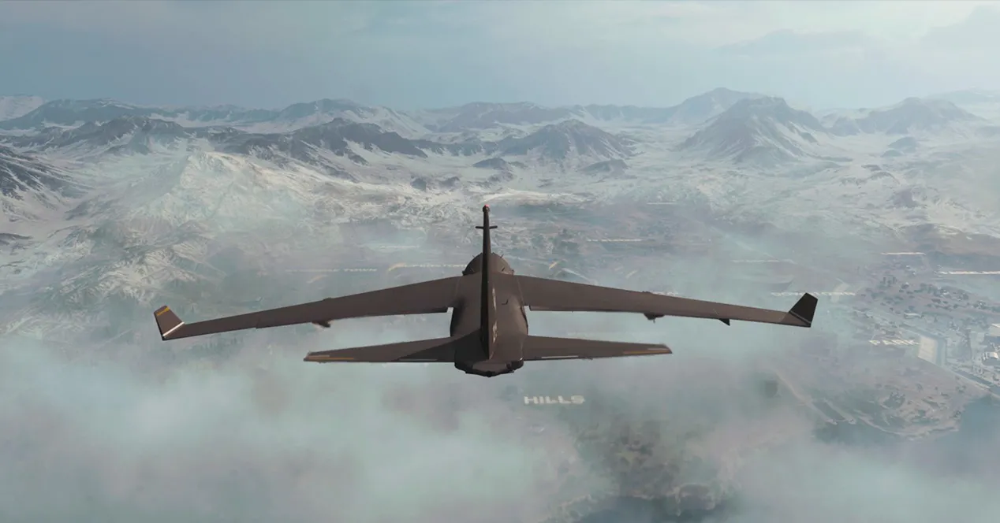
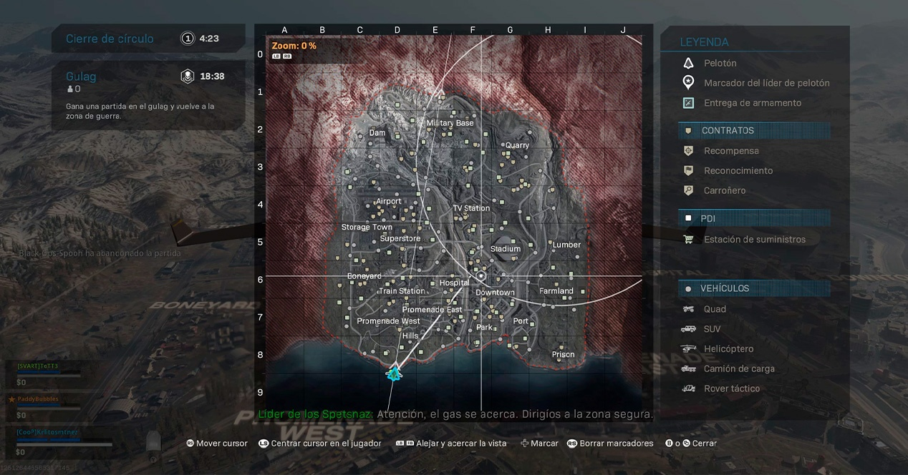
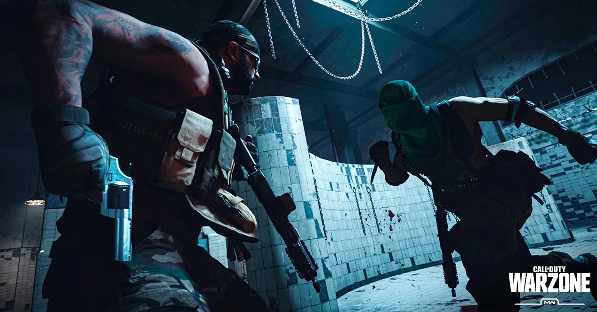
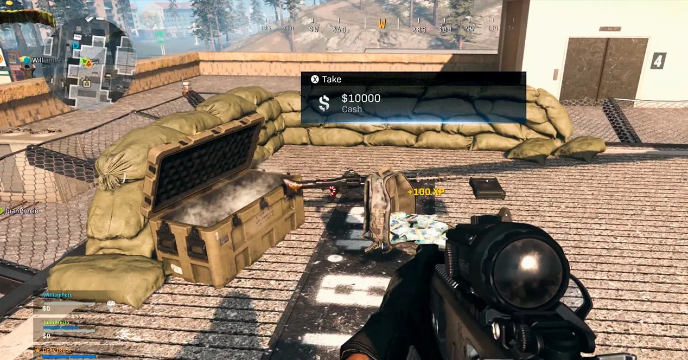
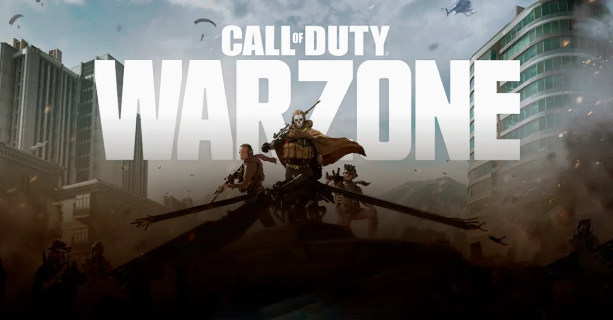

Call of Duty: Warzone es un videojuego gratuito (en inglés, "free to play o F2P") Battle Royale lanzado el 10 de marzo de 2020 para Xbox One, PlayStation 4 y Microsoft Windows como parte de la franquicia de Call of Duty. Warzone fue desarrollado por Infinity Ward y Raven Software y publicada por Activision. Warzone permite el combate multijugador en línea entre 150 jugadores ambientados en la ciudad ficticia de Verdansk1. El juego es un spin-off del título de 2019 Call of Duty: Modern Warfare, y se puede acceder a través de este o como un juego aparte. Es el tercer juego de la saga Call of Duty en incluir un modo Battle Royale, tras Blackout en Call of Duty: Black Ops 4 e Isolated en Call of Duty Mobile.
Warzone presenta dos modos, Botín y Battle Royale. El juego presenta un nuevo sistema de divisas dentro del juego llamado Cash que se usa en las estaciones de compra en Verdansk y sus alrededores.
Las caídas de carga son un ejemplo de dónde se puede intercambiar efectivo, para un acceso limitado a las clases personalizadas de los jugadores. Los jugadores pueden usar efectivo para comprar artículos como killstreaks y máscaras de gas. En el lanzamiento, Warzone permitió una capacidad de escuadrón de tres.
Un modo completamente gratuito

Warzone es un modo adicional para Modern Warfare que se puede descargar de manera completamente gratuita. Tengas o no en tu poder Call of Duty: Modern Warzone, podrás descargar Warzone sin problemas. Además, si vas a jugar desde PlayStation 4, no necesitarás PSN Plus para jugar, aunque si lo haces desde Xbox One, sí tendrás que tener una suscripción a Xbox Live.
Descarga warzone gratis
El Battle Royale
Pero vayamos a lo importante. En Warzone serás uno de los 150 jugadores que saltarán en paracaídas a los terrenos de Verdansk con el fin de acabar con todo el que se te cruce por delante. El mapa está formado por otros muchos que ya habíamos visto en el modo multijugador, sólo que ahora están unidos para dar vida a toda una ciudad en movimiento.
Piensa dónde caer con tu paracaídas y busca inmediatamente armamento decente para poder defenderte. Pero a todo eso tendrás que sumar otro problema. Una nube de gas está invadiendo la ciudad, así que deberás de desplazarte rápidamente a la zona segura para no caer ahogado.

Hay vida más allá
¿Y qué pasa cuando caes en plena batalla? Tranquilo, la partida no termina aquí. Tu personaje será trasladado al Gulag. Una cárcel para los caídos en la que tendremos que enfrentarnos con otro rival a vida o muerte para poder volver a la batalla. Si ganas, volverás a ser desplegado en paracaídas, pero si pierdes, tu partida terminará… en parte.
Será el momento en el que deberás de poner todas las esperanzas en los compañeros de equipo que sigan en pie. Durante la partida, además de las armas y los contratos, encontrarás también dinero. Esta divisa servirá para comprar accesorios, rachas de bajas e incluso para traer de vuelta a un amigo caído. Así que no des la partida por perdida tan pronto porque podrían solicitar de nuevo tus servicios.

¡A por el botín!
Por si fuera poco, además del modo clásico de battle royale también podemos disfrutar de un modo de juego llamado botín, en el que tendremos que recaudar 1 millón de dólares en 30 minutos. El equipo que consiga el dinero gana, pero claro, dicha tarea no será fácil. Al igual que en el battle royale, en la partida participarán 150 jugadores, y aquellos con mayor botín aparecerán marcados en el mapa.
Para poner a salvo tu recaudación podrás almacenar dejándolos en los helipuertos de entrega y cargándolos en el helicóptero, o utilizando los globos de depósito de dinero que encontrarás en las cajas de suministro o en las estaciones de suministro repartidos por el mapa. El primero que llegue al millón, gana la partida.


Estos son los dos modos de juego que se han introducido en Warzone. Recuerda que es un juego gratuito que puedes descargar desde ya mismo en PC, PS4 y Xbox One, así que no dudes en instalarlo para lanzarte inmediatamente en paracaídas. ¿Lograrás hacerte con la victoria?